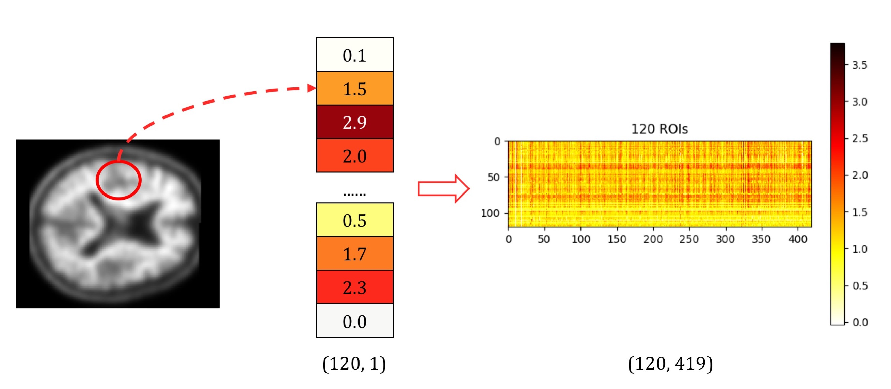
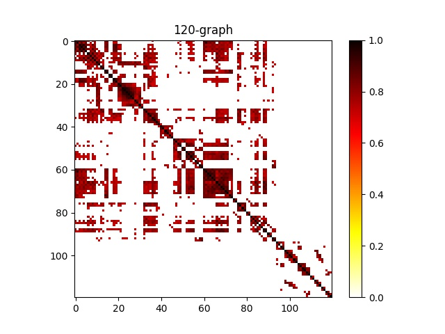

Graph-based AD Analysis with PET images
UNDER CONSTRUCTION
Graph Construction
We did not use the k-NN graph as the original paper, which could make the network focus only on local features rather than global connections.
Our method is listed as follows:
- Extract 120-D signals from AAL-2 atlas (120 brain regions) in 2mm-PET images;
- 
- Compute correlation of the region-pairs, and use it as the adjacency matrix with a cut-off on edge weight at threshold 0.7;
- 
Network Structure
Notations for network architectures:
- FCk for a Fully Connected Layer with k hidden units;
- Pk for a Graph Pooling Layer of size and stride k;
- GCk for a graph convolutional layer with k feature maps.
The
All FCk and GCk layers are followed by a LeakyReLU activation with $\alpha=0.01$.
The final layer is a softmax regression and the loss energy E is the cross-entropy with an l2 regularization on the weights of all FCk layers. Mini-batches are of size S = 20.
Our final network structure is denoted by GC32-P4-GC64-P4-FC512.
Advantage of Our Graph-based Methods
- Graph-based methods are more robust than image-based ones, because they use the region-level average signals rather than the voxel-level signals (in image-based methods), which could lead to instability when images are noisy on voxl-level;
- Incorporating any graph (even a randomly-generated graph with the same number of edges as the correlation graph) as a part of input almost guarantees a slight boosting in performance (compared with XGBoost);
- With our correlation graph as the input, the ChebNet yields the highest and stablest average classification accuracy (93+/-2%) among all region-based experiments.
UNDER CONSTRUCTION
UNDER CONSTRUCTION